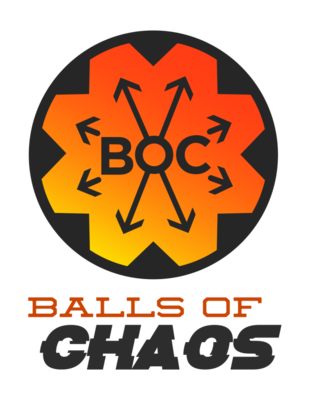

What are Marble Olympics?!
Marblelympics is the world's premiere stage to showcase marble competitiors from countries around the world!
Marble Olympics or Marble League is a collection of 16 tests of feat, endurance, and skill. 16 teams participate to see who will come out on top.
Presenting the teams.
Team Galactic

The hosts of this year's Marblelympics, Team Galactic, is one of the most regular qualifiers for the Marble Olympics. They hail from the Western Asian city of Galakonur, renowned for its scientific advancement, specifically in astronomy. Their team colors are transparent silver and brown ribbons. This is their 5th appearance at the Marblelympics, though they have yet to take home the coveted Marble League Trophy, topping out at only 5th place. If they can manage to win this year, the victory will be sweetened by the knowledge it was done at home.
Raspberry Racers
Being one of the best new teams their rookie year has granered the Racers a strong legacy to start on. The Raspberry Racers come from the city of Rubow in Central Europe, which is renowned as the raspberry capital of the world, due to the high number of raspberry farms in it's vicinity. The Racers are former competitiors from the Fruit Circuit and carry over a strong rivalry with the Limers. Their colors are shades of magenta with baby pink stripes. This will be their 3rd Marblelympics entry. The Raspberry Racers are our most recent Marble League champions and intend to keep their title this year.

Hazers

Another newer team, The Hazers debuted in 2018 with a resounding rookie year performance. While they originate from Eastern Asia, from where specifically is shrouded in mystery. There are rumors they might be from Southern Hunluen considering there is a souvenier shop dedicated to them located there, although there are hints that point to them training on the Mount Huaze mountain range as well. They have chosen smokey grey and white as their colors. This is also their 3rd apperance in the Marble League and they are hoping they can top their previous years record of a 3rd place finish.
Green Ducks
The Green Ducks are one of the more recent teams to qualify for Marble League, with their first appearance being last year. They come from a small British Isle named Bermenghank by way of Dionlin. To pay homage to the team being formed through an unlikely meeting on a duck farm, the Green Ducks opted for a name and colors that signify home. Their chose colors are an army green with brown & black swirls. Though this is their 2nd Marble League participation, they have already made a name for themselves by achieveing 2nd last year. They will definitely be a team to watch out for this year.
Savage Speeders
The Savage Speeders are one of the oldest and most decorated teams in Marble League. They are collectively from Western Europe, specifically:Speedy and Rapidly from Accellaise on the southern coast, Velocity from Pace on the same coastline to the east, and Swiftly from the capital city of Vellis, each of which is respectively known for its cultural, artistic, and economic significance. A combination of red with yellow and white are the agreed upon colors. The Savage Speeders have participated in every Marble League to date, in fact, they were the winners of the very 1st Marble League. Will they be able to reclaim their throne this year?
Crazy Cat's Eyes
The team best known for being the models for the Marble League Logo, the Crazy Cat's Eyes are well known throughout the professional marble world. While not previously acquainted; the team fully hails from the North African city of Felynia, located between two rivers, known for its prestige in film and entertainment with winding sand dunes to the east, nicknamed the "Cat's Dunes". Opting to go for a classic Transparent look, each member of the team sports a specific color that has a connection for them. This year will be the 3rd time the Crazy Cat's Eyes will have made it to the Marble League as competitors and while they have yet to place higher than 10th, they give their all every year.
Oceanics
The Oceanics are a team that has seen their fair share of high and low tides. Growing up as friends in the city of Dunduei in Oceania, the group ironically never learned to swim until their first Marblelympics invitation and as such is notoriously bad at the water events in which they participate. Going with a dark blue with blue stripes as their colors reflects their Oceanian heritage. Although they have made 5 total appearances and have even managed to place 3rd; after last year's abyssmal performance landing them in last place with no medals and resulting in the coach being fired during the 13th event, this year they have something to prove.

.jpg)
Balls of Chaos
The Balls of Chaos are one of the oldest teams in marble sport history, dating back to the start of the millennium. They come from the city of Hunluen, the most populated city in East Asia and the world. The Balls of Chaos, similar to the Cat's Eyes, have opted for a Transparent color but have decided to all have a mix of red, blue, and yellow. This will be the Balls of Chaos' 4th appearance and they will be hoping for a podium position this time around in order to break their standing record of 5th.
Thunderbolts
The Thunderbolts are one of the more understated teams participating in the Marblelympics. They come from the city of Thorston, whose exact location isn't konwn but is believed to be located in northern Europe. Deciding to go with a blue with yellow swirls to represent the vastness of sky and speed of lightning. While the team the Thunderbolts have had 5 appearances, managing to make it to 3rd in their 1st year; the team had a complete overhaul 2years ago. It's current members have not had favorable standings yet but are looking to prove themselves this year and show they definitively deserve to be in the League.
Mellow Yellow
Mellow Yellow is another decorated and long-standing team in the Marblelympics. Another group of hometown friends; the members of team Yellow used to work for the world-famous Non-Descript Soda Company based out of Amalanta until they discovered their mutual love of racing. Deciding to go with pure yellow, because it was the color of the soda they were testing when they made the decision to compete. Having competed in every Marble League to date, they managed to have podium finishes the 1st two years. With 2nd place being their current peak placement, they are looking to score the coveted 1st place this year.
Bumblebees
One of our newest teams; the Bumblebees are making their debut this year and have a lot to prove. Coming from the city of Buzzpig on the eastern border of Buzznya, a region in Eastern Europe, the Bumblebees have a longstanding rivalry with the Hornets(who are also participating this year) who also come from Buzznya. Choosing the colors of their namesake, they sport a yellow with brown stripes classic look. Although this is their first appearance in the Marblelympics, they have had strong showings in the preceding and qualifying events.
O'rangers

The O'rangers are one of the most successful and fan favorite teams competeing. Having participated in every Marble League so far, they have three standing records and achieved 1st in the 2017 Marble League. The Rangers are actually all siblings that run an orange farm outside of Orlango, located in southeast North America. As their name implies, their team color is orange. Riding on a fan high coming into this year's league, the O'rangers are surely looking to set even more records and set the crowd on fire.

.jpg)
Midnight Wisps
One of the more middle-of-the-road teams, the Midnight Wisps have had their share of highs and lows. The Wisps come from the Scandinavian taiga, east of the city of Helarve. Having a swirled black and blue as their colors, the Midnight Wisps sure do know style. This will be the fourth time they have made it to the Marblelympics, they are looking to reach 1st again like they did in 2018.
Minty Maniacs
The Minty Maniacs, known for being in "Mint Condition", are a team looking to show the world what they have to offer. The Maniacs are from Herbotamia, a region within Western Asia known for growing herbs and spices; and also having gained a reputation for being the "freshest place in the world". Sporting a mint green with blue & brown swirls has the Mint miesters feeling very "cool". Although this is only their 2nd appearance at Marble League, the Minty Maniacs have a personal goal to make sure they surpass their previous placement of 13th.
Team Momo
Team Momo is another fan fvorite team. While they performed very well in their first Marble League, they have been having ups and downs in the following years. They come from the mountainous region of Om in Southeast Asia, with most of the team hailing from villages around the region's capital city of Om, one of the oldest cities in the world. Selecting dark green with blue and yellow swirls as their colors, Team Momo definitely stands out from the crowd. Having had 4 trips to the Marblelympics, they are still looking for the success of their first year which saw them place just outside the podium at 4th.
Hornets
Our newest team, The Hornets were the winners of the first Fan Selection Contest which allowed them the opportunity to participate in this year's League. Another team from the Buzznya region, The Hornets come from the Eastern European city of Buzzkill, which is the westernmost city within the region. Opting for a black with yellow stripes as their team colors, The Hornets minimalist look will hopefully help them stand out. Since this is their first Marblelympics participation, The Hornets have a lot to prove and showcase.